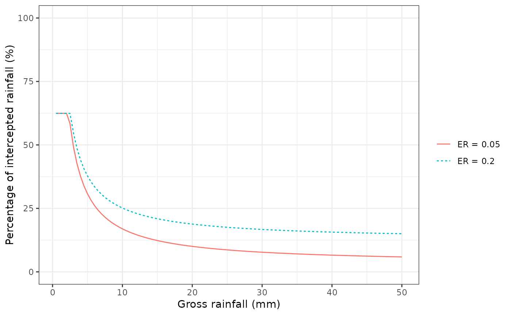

hydrology_raininterception.RdFunction hydrology_rainInterception calculates the amount of rainfall intercepted daily by the canopy, given a rainfall and canopy characteristics. Two canopy interception models are currently available: the sparse Gash (1995) model and the Liu (2001) model. In both cases the current implementation assumes no trunk interception.
hydrology_rainInterception(Rainfall, Cm, p, ER=0.05, method="Gash1995") hydrology_erFactor(doy, pet, prec, Rconv = 5.6, Rsyn = 1.5) hydrology_interceptionPlot(x, SpParams, ER = 0.05, gdd = NA, throughfall = FALSE)
| Rainfall | A numeric vector of (daily) rainfall. |
|---|---|
| Cm | Canopy water storage capacity. |
| p | Proportion of throughfall (normally 1 - c, where c is the canopy cover). |
| ER | The ratio of evaporation rate to rainfall rate. |
| method | Rainfall interception method (either |
| doy | Day of the year. |
| pet | Potential evapotranspiration for a given day (mm). |
| prec | Precipitation for a given day (mm). |
| Rconv, Rsyn | Rainfall rate for convective storms and synoptic storms, respectively, in mm/h. |
| x | An object of class |
| SpParams | A data frame with species parameters (see |
| gdd | Growth degree days (in Celsius). |
| throughfall | Boolean flag to plot relative throughfall instead of percentage of intercepted rainfall. |
Function hydrology_rainInterception can accept either vectors or scalars as parameters Cm, p and ER. If they are supplied as vectors they should be of the same length as Rainfall.
Function hydrology_erFactor calculates the evaporation-to-rainfall ratio for input values of potential evapotranspiration and rainfall, while accounting for seasonal variation in rainfall intensity (mm/h). Default values Rconv = 5.6 and Rsyn = 1.5 come from Miralles et al. (2010).
Function hydrology_rainInterception returns a vector of the same length as Rainfall containing intercepted rain values. Function hydrology_erFactor returns a scalar with the evaporation-to-rainfall ratio.
Liu (2001). Evaluation of the Liu model for predicting rainfall interception in forests world-wide. - Hydrol. Process. 15: 2341-2360.
Gash (1979). An analytical model of rainfall interception by forests. - Quarterly Journal of the Royal Meteorological Society.
Gash et al. (1995). Estimating sparse forest rainfall interception with an analytical model. - Journal of Hydrology.
Miralles DG, Gash JH, Holmes TRH, et al (2010) Global canopy interception from satellite observations. J Geophys Res 115:D16122. doi: 10.1029/2009JD013530.
Miquel De Cáceres Ainsa, CREAF
#Load example plot plant data data(exampleforestMED) #Default species parameterization data(SpParamsMED) #Draw rainfall interception for two values of the E/R ratio hydrology_interceptionPlot(exampleforestMED, SpParamsMED, ER = c(0.05, 0.2))